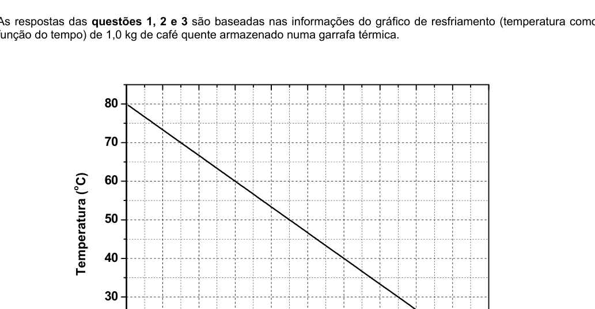
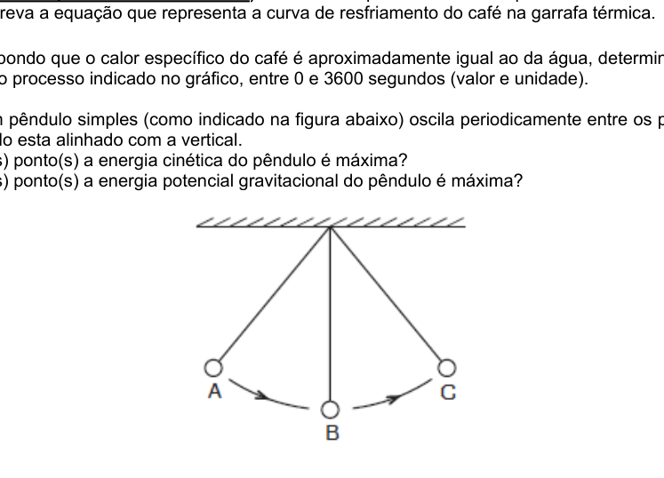
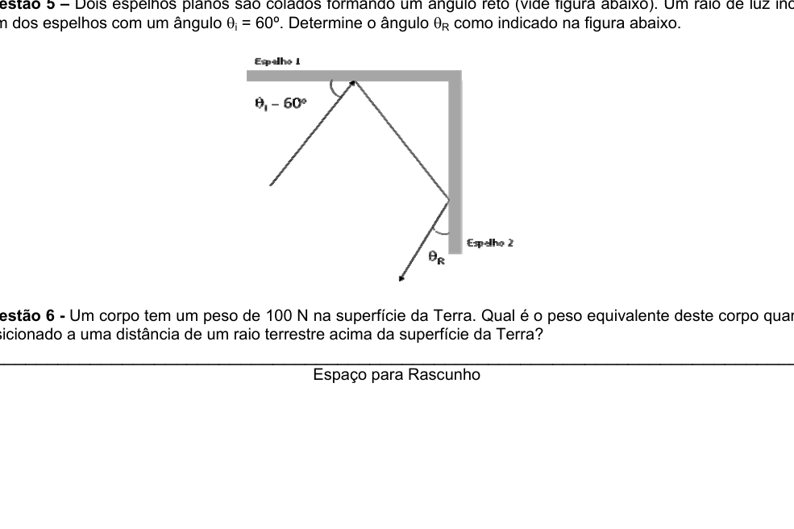
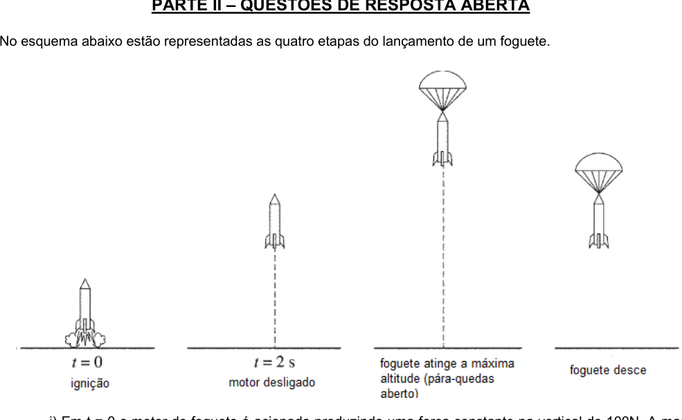
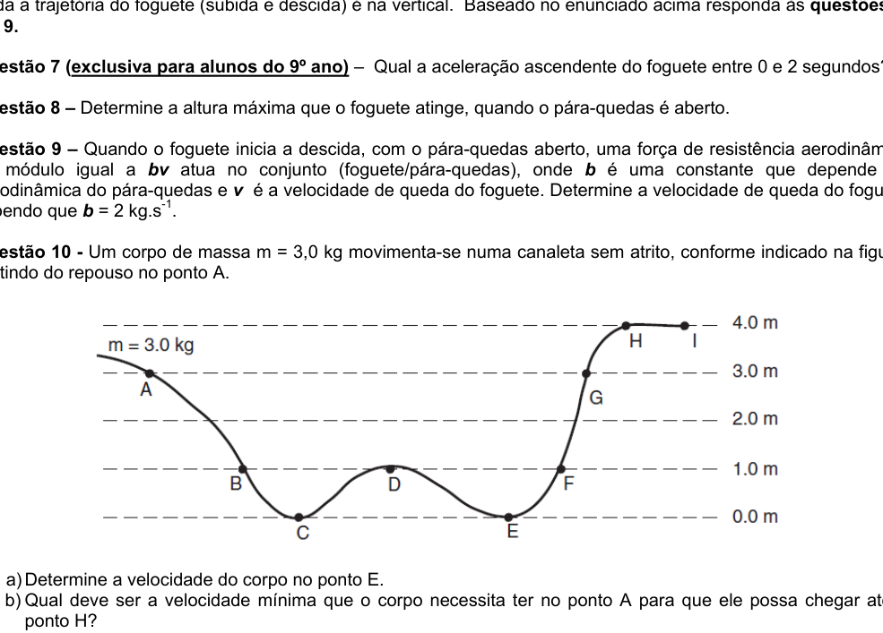
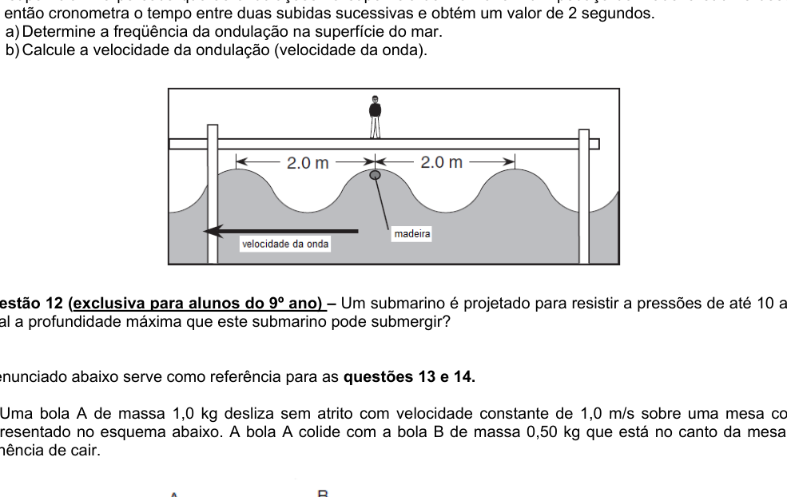
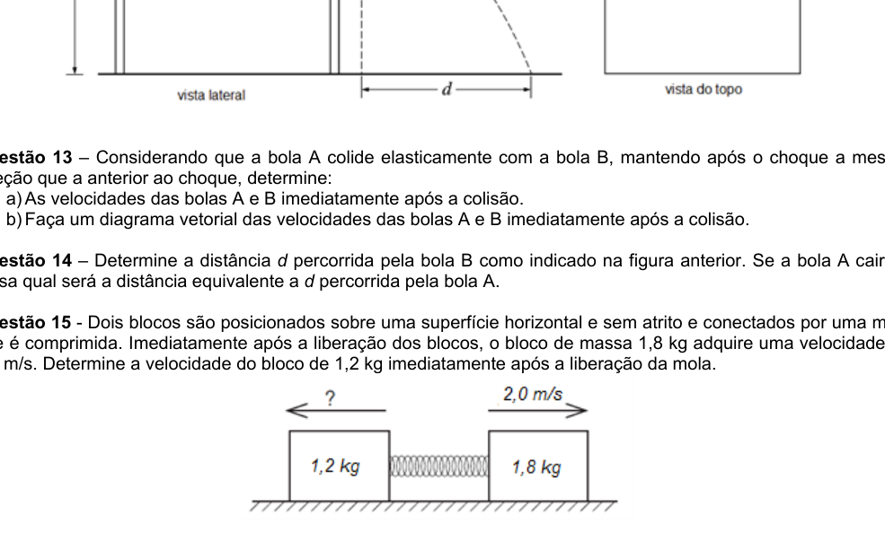
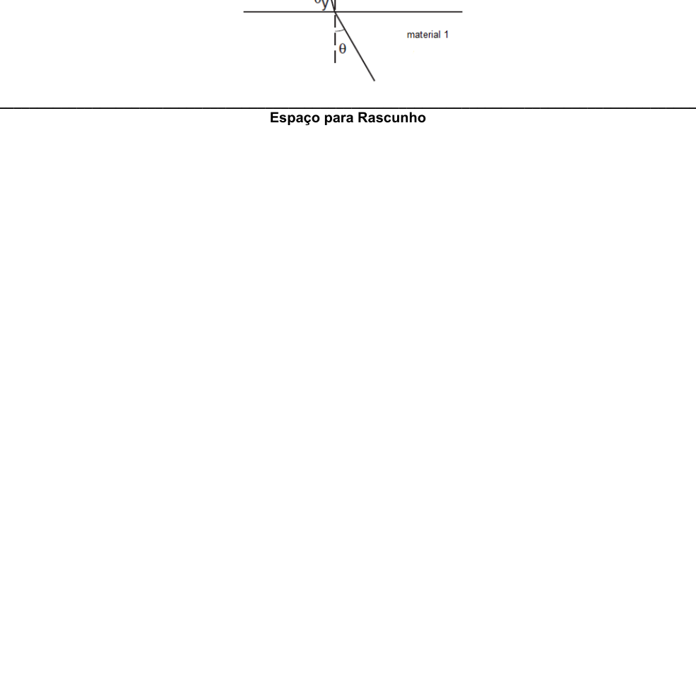

Questão 1 (exclusiva para alunos do 9° ano)
As respostas das questões 1, 2 e 3 são baseadas nas informações do gráfico de resfriamento (temperatura como função do tempo) de 1,0 kg de café quente armazenado numa garrafa térmica.
Determine a taxa de resfriamento do café na garrafa térmica. (valor e unidade)
 Cooling curve temperature vs time
Cooling curve temperature vs time
Topic: Thermodynamics Metodi: Experimental Data Analysis, Graph Linearization Competenze: Experimental Data Analysis, Physical Reasoning Objects: Container Fonte: Testo (PDF) — p.2
Questione 1 (esclusiva per gli studenti del corso 9°)
Le risposte alle domande 1, 2 e 3 sono basate sulle informazioni del grafico di raffreddamento (temperatura in funzione del tempo) di 1,0 kg di caffè caldo conservato in una bottiglia termico.
Determina il tasso di raffreddamento del caffè in bottiglia termico. (valore e unità)
Cooling curve temperature vs time
Topic: Thermodynamics Metodi: Experimental Data Analysis, Graph Linearization Competenze: Experimental Data Analysis, Physical Reasoning Objects: Container Fonte: Testo (PDF) — p.2
Question 1 (MSK2/> *(exclusive for students of year 9°)
The answers to questions 1, 2 and 3 are based on the information from the cooling chart (temperature as a function of time) of 1,0 kg of hot coffee stored in a thermal bottle.
Determine the cooling rate of the coffee in the thermal bottle. (value and unit)
The following table shows the temperature and time of the cooling curve:
Topic: Thermodynamics Metodi: Experimental Data Analysis, Graph Linearization Competenze: Experimental Data Analysis, Physical Reasoning Objects: Container Fonte: Testo (PDF) — p.2
Questão 2 (exclusiva para alunos do 9° ano)
As respostas das questões 1, 2 e 3 são baseadas nas informações do gráfico de resfriamento (temperatura como função do tempo) de 1,0 kg de café quente armazenado numa garrafa térmica.
Usando para indicar a temperatura do café e para o tempo transcorrido, escreva a equação que representa a curva de resfriamento do café na garrafa térmica.
 Cooling curve temperature vs time
Cooling curve temperature vs time
Topic: Thermodynamics Metodi: Experimental Data Analysis, Graph Linearization Competenze: Mathematical Modeling, Physical Reasoning Objects: Container Fonte: Testo (PDF) — p.2
Questione 2 (esclusiva per gli studenti del corso 9°)
Le risposte alle domande 1, 2 e 3 sono basate sulle informazioni del grafico di raffreddamento (temperatura in funzione del tempo) di 1,0 kg di caffè caldo conservato in una bottiglia termico.
Usando per indicare la temperatura del caffè e per il tempo trascorso, scrivete l’equazione che rappresenta la curva di raffreddamento del caffè nella bottiglia termico.
Cooling curve temperature vs time
Topic: Thermodynamics Metodi: Experimental Data Analysis, Graph Linearization Competenze: Mathematical Modeling, Physical Reasoning Objects: Container Fonte: Testo (PDF) — p.2
Question 2 (exclusive for students of year 9°)
The answers to questions 1, 2 and 3 are based on the information from the cooling chart (temperature as a function of time) of 1,0 kg of hot coffee stored in a thermal bottle.
Using to indicate the temperature of the coffee and for the time elapsed, write the equation representing the cooling curve of the coffee in the thermal bottle.
The following table shows the temperature and time of the cooling curve:
Topic: Thermodynamics Metodi: Experimental Data Analysis, Graph Linearization Competenze: Mathematical Modeling, Physical Reasoning Objects: Container Fonte: Testo (PDF) — p.2
Questão 3
As respostas das questões 1, 2 e 3 são baseadas nas informações do gráfico de resfriamento (temperatura como função do tempo) de 1,0 kg de café quente armazenado numa garrafa térmica.
Supondo que o calor específico do café é aproximadamente igual ao da água, determine qual a energia perdida durante o processo indicado no gráfico, entre 0 e 3600 segundos (valor e unidade).
Dados: calor específico da água ; ; massa do café .

Cooling curve temperature vs timeTopic: Thermodynamics Metodi: First Law of Thermodynamics, Experimental Data Analysis Competenze: Experimental Data Analysis, Physical Reasoning Objects: Calorimeter Fonte: Testo (PDF) — p.2
La domanda 3
Le risposte alle domande 1, 2 e 3 sono basate sulle informazioni del grafico di raffreddamento (temperatura in funzione del tempo) di 1,0 kg di caffè caldo conservato in una bottiglia termico.
Supponendo che il calore specifico del caffè sia approssimativamente uguale a quello dell’acqua, determina quale energia è stata persa durante il processo indicato nel grafico, tra 0 e 3600 secondi (valore e unità).
*Dati: * calore specifico dell’acqua ; ; massa del caffè .
Cooling curve temperature vs time
Topic: Thermodynamics Metodi: First Law of Thermodynamics, Experimental Data Analysis Competenze: Experimental Data Analysis, Physical Reasoning Objects: Calorimeter Fonte: Testo (PDF) — p.2
Question 3 - The Commission has decided to take the necessary measures to ensure that the Commission is able to take the necessary measures to ensure that the Commission is able to take the necessary measures to ensure that the Commission is able to take the necessary measures.
The answers to questions 1, 2 and 3 are based on the information from the cooling chart (temperature as a function of time) of 1,0 kg of hot coffee stored in a thermal bottle.
Assuming that the specific heat of coffee is approximately equal to that of water, it determines what energy is lost during the process shown in the graph, between 0 and 3600 seconds (value and unit).
The data: specific water heat ; ; mass of coffee .
The following table shows the temperature and time of the cooling curve:
Topic: Thermodynamics Metodi: First Law of Thermodynamics, Experimental Data Analysis Competenze: Experimental Data Analysis, Physical Reasoning Objects: Calorimeter Fonte: Testo (PDF) — p.2
Questão 4
Um pêndulo simples (como indicado na figura abaixo) oscila periodicamente entre os pontos A e C. No ponto B o pêndulo está alinhado com a vertical.
a) Em qual(is) ponto(s) a energia cinética do pêndulo é máxima?
b) Em qual(is) ponto(s) a energia potencial gravitacional do pêndulo é máxima?

Simple pendulum oscillating between A and CTopic: Oscillations & Waves, Conservation of Energy Metodi: Conservation of Energy, Simple Harmonic Motion Analysis Competenze: Physical Reasoning, Diagrammatic Reasoning Objects: Pendulum Fonte: Testo (PDF) — p.2
Il numero di persone che hanno ricevuto il messaggio è stato di circa un milione di persone.
Un semplice pendolo (come illustrato nella figura seguente) oscilla periodicamente tra i punti A e C. Al punto B il pendolo è allineato alla verticale.
a) A che punto è massima l’energia cinetica del pendolo?
b) A che punto è massima l’energia potenziale gravitazionale del pendolo?
*Simple pendulum oscillating between A and C *
Topic: Oscillations & Waves, Conservation of Energy Metodi: Conservation of Energy, Simple Harmonic Motion Analysis Competenze: Physical Reasoning, Diagrammatic Reasoning Objects: Pendulum Fonte: Testo (PDF) — p.2
Question 4 - The Commission has not yet decided on the application of this Regulation.
A simple pendulum (as shown in the figure below) periodically oscillates between points A and C. At point B the pendulum is aligned with the vertical.
(a) At what point is the kinetic energy of the pendulum maximum?
(b) At what point is the gravitational potential energy of the pendulum maximum?
*Simple pendulum oscillating between A and C *
Topic: Oscillations & Waves, Conservation of Energy Metodi: Conservation of Energy, Simple Harmonic Motion Analysis Competenze: Physical Reasoning, Diagrammatic Reasoning Objects: Pendulum Fonte: Testo (PDF) — p.2
Questão 5
Dois espelhos planos são colados formando um ângulo reto (vide figura abaixo). Um raio de luz incide num dos espelhos com um ângulo . Determine o ângulo como indicado na figura abaixo.

Two perpendicular flat mirrors with light rayTopic: Geometric Optics Metodi: Ray Tracing, Superposition Principle Competenze: Diagrammatic Reasoning, Physical Reasoning Objects: Mirror Fonte: Testo (PDF) — p.3
Il numero di persone che hanno ricevuto la domanda è stato di:
Due specchi piatti sono incollati formando un angolo retto (vedi figura sotto). Un raggio di luce incide su uno degli specchi con un angolo . Determina l’angolo come indicato nella figura seguente.
Two perpendicular flat mirrors with light ray
Topic: Geometric Optics Metodi: Ray Tracing, Superposition Principle Competenze: Diagrammatic Reasoning, Physical Reasoning Objects: Mirror Fonte: Testo (PDF) — p.3
Question 5 - The Commission has not yet decided on the application of this Regulation.
Two flat mirrors are glued together at a right angle (see figure below). A ray of light hits one of the mirrors at an angle of . Determine the angle as shown in the figure below.
*Two perpendicular flat mirrors with light ray *
Topic: Geometric Optics Metodi: Ray Tracing, Superposition Principle Competenze: Diagrammatic Reasoning, Physical Reasoning Objects: Mirror Fonte: Testo (PDF) — p.3
Questão 6
Um corpo tem um peso de 100 N na superfície da Terra. Qual é o peso equivalente deste corpo quando posicionado a uma distância de um raio terrestre acima da superfície da Terra?
Topic: Gravitation, Newtonian Mechanics Metodi: Newton’s Law of Gravitation, Physical Modeling Competenze: Physical Reasoning, Mathematical Modeling Objects: Planet Fonte: Testo (PDF) — p.3
Il numero di persone che hanno ricevuto la domanda è stato di:
Un corpo pesa 100 N sulla superficie della Terra. Qual è il peso equivalente di questo corpo quando posizionato a una distanza di un raggio terrestre sopra la superficie della Terra?
Topic: Gravitation, Newtonian Mechanics Metodi: Newton’s Law of Gravitation, Physical Modeling Competenze: Physical Reasoning, Mathematical Modeling Objects: Planet Fonte: Testo (PDF) — p.3
Question 6 - The Commission has not yet adopted a proposal for a regulation on the application of the rules on the protection of workers’ rights.
A body weighs 100 N on the Earth’s surface. What is the equivalent weight of this body when placed at a distance of one earth radius above the earth’s surface?
Topic: Gravitation, Newtonian Mechanics Metodi: Newton’s Law of Gravitation, Physical Modeling Competenze: Physical Reasoning, Mathematical Modeling Objects: Planet Fonte: Testo (PDF) — p.3
Questão 7 (exclusiva para alunos do 9° ano)
No esquema abaixo estão representadas as quatro etapas do lançamento de um foguete:
- i) Em o motor do foguete é acionado produzindo uma força constante na vertical de 100 N. A massa do foguete é de 2,0 kg e praticamente não se altera durante todo o vôo;
- ii) Em o motor é desligado;
- iii) Ao atingir a altura máxima o pára-quedas (de massa desprezível) é aberto;
- iv) Na descida, com o auxílio do pára-quedas, a velocidade do foguete é constante.
Toda a trajetória do foguete (subida e descida) é na vertical.
Qual a aceleração ascendente do foguete entre 0 e 2 segundos?
Dados: .
 Rocket launch four-stage diagram
Rocket launch four-stage diagram
Topic: Newtonian Mechanics Metodi: Free-Body Diagram, Kinematic Equations Competenze: Physical Reasoning, Mathematical Modeling Objects: Projectile Fonte: Testo (PDF) — p.4
Questione 7 (esclusiva per gli studenti del corso 9°)
Il diagramma di seguito mostra i quattro passaggi del lancio di un razzo:
- i) A il motore del razzo è azionato producendo una forza costante a verticale di 100 N. Il massa del razzo è di 2,0 kg e praticamente non cambia durante tutto il volo;
- ii) In il motore è spento;
- iii) Al massimo della altezza, il paracadute (di massa scarsa) si apre;
- iv) La velocità del razzo è costante durante la discesa, con l’aiuto del paracadute.
L’intera traiettoria del razzo (sbalzo e discesa) è verticale.
Qual è l’accelerazione ascendente del razzo tra 0 e 2 secondi?
*Dati: * .
Rocket launch four-stage diagram
Topic: Newtonian Mechanics Metodi: Free-Body Diagram, Kinematic Equations Competenze: Physical Reasoning, Mathematical Modeling Objects: Projectile Fonte: Testo (PDF) — p.4
Questão 7 (exclusiva para alunos do 9° ano)
The following diagram shows the four stages of a rocket launch:
- i) At the rocket engine is actuated producing a constant force at the vertical of 100 N. The mass of the rocket is 2.0 kg and it is practically unchanged throughout the flight;
- (ii) At the engine is turned off;
- (iii) At the maximum height the parachute (of negligible mass) is opened;
- (iv) The speed of the rocket is constant during descent with the aid of the parachute.
The entire trajectory of the rocket (up and down) is vertical.
What’s the upward acceleration of the rocket between 0 and 2 seconds?
Dados: .
Rocket launch four-stage diagram
Topic: Newtonian Mechanics Metodi: Free-Body Diagram, Kinematic Equations Competenze: Physical Reasoning, Mathematical Modeling Objects: Projectile Fonte: Testo (PDF) — p.4
Questão 8
No esquema abaixo estão representadas as quatro etapas do lançamento de um foguete:
- i) Em o motor do foguete é acionado produzindo uma força constante na vertical de 100 N. A massa do foguete é de 2,0 kg e praticamente não se altera durante todo o vôo;
- ii) Em o motor é desligado;
- iii) Ao atingir a altura máxima o pára-quedas (de massa desprezível) é aberto;
- iv) Na descida, com o auxílio do pára-quedas, a velocidade do foguete é constante.
Toda a trajetória do foguete (subida e descida) é na vertical.
Determine a altura máxima que o foguete atinge, quando o pára-quedas é aberto.
Dados: .

Rocket launch four-stage diagramTopic: Newtonian Mechanics, Conservation of Energy Metodi: Kinematic Equations, Free-Body Diagram, Energy Conservation Method Competenze: Physical Reasoning, Mathematical Modeling Objects: Projectile Fonte: Testo (PDF) — p.4
La domanda 8
Il diagramma di seguito mostra i quattro passaggi del lancio di un razzo:
- i) A il motore del razzo è azionato producendo una forza costante a verticale di 100 N. Il massa del razzo è di 2,0 kg e praticamente non cambia durante tutto il volo;
- ii) In il motore è spento;
- iii) Al massimo della altezza, il paracadute (di massa scarsa) si apre;
- iv) La velocità del razzo è costante durante la discesa, con l’aiuto del paracadute.
L’intera traiettoria del razzo (sbalzo e discesa) è verticale.
Determina l’altezza massima che il razzo raggiungerà quando il paracadute sarà aperto.
*Dati: * .
Rocket launch four-stage diagram
Topic: Newtonian Mechanics, Conservation of Energy Metodi: Kinematic Equations, Free-Body Diagram, Energy Conservation Method Competenze: Physical Reasoning, Mathematical Modeling Objects: Projectile Fonte: Testo (PDF) — p.4
Questão 8
The following diagram shows the four stages of a rocket launch:
- i) At the rocket engine is actuated producing a constant force at the vertical of 100 N. The mass of the rocket is 2.0 kg and it is practically unchanged throughout the flight;
- (ii) At the engine is turned off;
- (iii) At the maximum height the parachute (of negligible mass) is opened;
- (iv) The speed of the rocket is constant during descent with the aid of the parachute.
The entire trajectory of the rocket (up and down) is vertical.
Determine the maximum height the rocket will reach when the parachute is opened.
Dados: .
Rocket launch four-stage diagram
Topic: Newtonian Mechanics, Conservation of Energy Metodi: Kinematic Equations, Free-Body Diagram, Energy Conservation Method Competenze: Physical Reasoning, Mathematical Modeling Objects: Projectile Fonte: Testo (PDF) — p.4
Questão 9
No esquema abaixo estão representadas as quatro etapas do lançamento de um foguete:
- i) Em o motor do foguete é acionado produzindo uma força constante na vertical de 100 N. A massa do foguete é de 2,0 kg e praticamente não se altera durante todo o vôo;
- ii) Em o motor é desligado;
- iii) Ao atingir a altura máxima o pára-quedas (de massa desprezível) é aberto;
- iv) Na descida, com o auxílio do pára-quedas, a velocidade do foguete é constante.
Toda a trajetória do foguete (subida e descida) é na vertical.
Quando o foguete inicia a descida, com o pára-quedas aberto, uma força de resistência aerodinâmica de módulo igual a atua no conjunto (foguete/pára-quedas), onde é uma constante que depende da aerodinâmica do pára-quedas e é a velocidade de queda do foguete. Determine a velocidade de queda do foguete sabendo que .
Dados: ; massa do foguete .
 Rocket launch four-stage diagram
Rocket launch four-stage diagram
Topic: Newtonian Mechanics, Fluid Mechanics Metodi: Free-Body Diagram, Physical Modeling Competenze: Physical Reasoning, Mathematical Modeling Objects: Projectile Fonte: Testo (PDF) — p.4
Il numero di persone che hanno ricevuto la domanda è stato di:
Il diagramma di seguito mostra i quattro passaggi del lancio di un razzo:
- i) A il motore del razzo è azionato producendo una forza costante a verticale di 100 N. Il massa del razzo è di 2,0 kg e praticamente non cambia durante tutto il volo;
- ii) In il motore è spento;
- iii) Al massimo della altezza, il paracadute (di massa scarsa) si apre;
- iv) La velocità del razzo è costante durante la discesa, con l’aiuto del paracadute.
L’intera traiettoria del razzo (sbalzo e discesa) è verticale.
Quando il razzo inizia la discesa, con il paracaduto aperto, una forza di resistenza aerodinamica modulare pari a agisce sul gruppo (fuso/paracaduto), dove è una costante che dipende dall’aerodinamica del paracaduto e è la velocità di caduta del razzo. Determina la velocità di caduta del razzo sapendo che .
*Dati: * ; massa del razzo .
Rocket launch four-stage diagram
Topic: Newtonian Mechanics, Fluid Mechanics Metodi: Free-Body Diagram, Physical Modeling Competenze: Physical Reasoning, Mathematical Modeling Objects: Projectile Fonte: Testo (PDF) — p.4
Questão 9
The following diagram shows the four stages of a rocket launch:
- i) At the rocket engine is actuated producing a constant force at the vertical of 100 N. The mass of the rocket is 2.0 kg and it is practically unchanged throughout the flight;
- (ii) At the engine is turned off;
- (iii) At the maximum height the parachute (of negligible mass) is opened;
- (iv) The speed of the rocket is constant during descent with the aid of the parachute.
The entire trajectory of the rocket (up and down) is vertical.
When the rocket starts its descent with the parachute open, an aerodynamic resistance force of module equal to acts on the assembly (rocket/parachute), where is a constant that depends on the parachute’s aerodynamics and is the velocity of the rocket’s fall. Determine the rocket’s rate of fall knowing that .
Dados: ; massa do foguete .
Rocket launch four-stage diagram
Topic: Newtonian Mechanics, Fluid Mechanics Metodi: Free-Body Diagram, Physical Modeling Competenze: Physical Reasoning, Mathematical Modeling Objects: Projectile Fonte: Testo (PDF) — p.4
Questão 10
Um corpo de massa movimenta-se numa canaleta sem atrito, conforme indicado na figura, partindo do repouso no ponto A.
a) Determine a velocidade do corpo no ponto E.
b) Qual deve ser a velocidade mínima que o corpo necessita ter no ponto A para que ele possa chegar até o ponto H?

Frictionless track with points A through HTopic: Conservation of Energy, Newtonian Mechanics Metodi: Conservation of Energy, Kinematic Equations Competenze: Physical Reasoning, Mathematical Modeling Objects: — Fonte: Testo (PDF) — p.4
Il numero di persone che hanno ricevuto la domanda è stato risolto.
Un corpo di massa si muove in una canale senza attrito, come indicato nella figura, partendo dal riposo al punto A.
a) Determina la velocità del corpo al punto E.
b) Qual è la velocità minima che il corpo deve avere al punto A per raggiungere il punto H?
Frictionless track with points A through H
Topic: Conservation of Energy, Newtonian Mechanics Metodi: Conservation of Energy, Kinematic Equations Competenze: Physical Reasoning, Mathematical Modeling Objects: — Fonte: Testo (PDF) — p.4
The Commission has also adopted a number of measures to combat the use of the ‘small’ technology.
A mass body moves through a frictionless channel as shown in Figure 1 starting from the resting point in point A.
(a) Determine the body speed at point E.
(b) What is the minimum speed the body needs to have at point A to reach point H?
Frictionless track with points A through H
Topic: Conservation of Energy, Newtonian Mechanics Metodi: Conservation of Energy, Kinematic Equations Competenze: Physical Reasoning, Mathematical Modeling Objects: — Fonte: Testo (PDF) — p.4
Questão 11
Um estudante está numa plataforma (vide figura abaixo) acima do mar, observando as ondulações na sua superfície. Ele percebe que as ondulações na superfície do mar fazem um pedaço de madeira subir e descer. Ele então cronometra o tempo entre duas subidas sucessivas e obtém um valor de 2 segundos.
a) Determine a frequência da ondulação na superfície do mar.
b) Calcule a velocidade da ondulação (velocidade da onda).
Informação adicional do enunciado: o comprimento de onda é indicado na figura.

Student on platform observing sea wavesTopic: Oscillations & Waves Metodi: Wave Equation, Physical Modeling Competenze: Physical Reasoning, Mathematical Modeling Objects: — Fonte: Testo (PDF) — p.5
Il numero di persone che hanno ricevuto il diploma è stato di circa un milione di persone.
Uno studente si trova su un piattaforma (vedi figura sotto) sopra il mare, osservando le onde sulla sua superficie. Egli si rende conto che le ondulazioni sulla superficie del mare fanno salire e scendere un pezzo di legno. Quindi cronometra il tempo tra due successive altezze e ottiene un valore di 2 secondi.
a) Determina la frequenza di corrosione sulla superficie del mare.
b) Calcolare la velocità di ondulazione (velocità d’onda).
Informazione aggiuntiva della frase: la lunghezza d’onda è indicata nella figura.
Student on platform observing sea waves
Topic: Oscillations & Waves Metodi: Wave Equation, Physical Modeling Competenze: Physical Reasoning, Mathematical Modeling Objects: — Fonte: Testo (PDF) — p.5
The Commission has already adopted a number of proposals for the amendment.
A student is standing on a platform (see figure below) above the sea, observing the ripples on its surface. He realizes that the ripples on the sea surface cause a piece of wood to rise and fall. He then timed the time between two successive ascents and got a value of 2 seconds.
(a) Determine the frequency of rippling at sea level.
(b) Calculate the wave velocity (wavelength).
Additional information on the statement: the wavelength is shown in Figure 1.
Student on platform observing sea waves
Topic: Oscillations & Waves Metodi: Wave Equation, Physical Modeling Competenze: Physical Reasoning, Mathematical Modeling Objects: — Fonte: Testo (PDF) — p.5
Questão 12 (exclusiva para alunos do 9° ano)
Um submarino é projetado para resistir a pressões de até 10 atm. Qual a profundidade máxima que este submarino pode submergir?
Dados: ; ; .
Topic: Fluid Mechanics Metodi: Hydrostatic Equilibrium, Physical Modeling Competenze: Physical Reasoning, Mathematical Modeling Objects: — Fonte: Testo (PDF) — p.5
Questione 12 (esclusiva per gli studenti del corso 9°)
Un sottomarino è progettato per resistere a pressioni fino a 10 atm. Qual è la profondità massima che questo sottomarino può immergere?
I dati: * ; ; .
Topic: Fluid Mechanics Metodi: Hydrostatic Equilibrium, Physical Modeling Competenze: Physical Reasoning, Mathematical Modeling Objects: — Fonte: Testo (PDF) — p.5
Questão 12 (exclusiva para alunos do 9° ano)
A submarine is designed to withstand pressures of up to 10 atm. What is the maximum depth this submarine can sink?
Dados: ; ; .
Topic: Fluid Mechanics Metodi: Hydrostatic Equilibrium, Physical Modeling Competenze: Physical Reasoning, Mathematical Modeling Objects: — Fonte: Testo (PDF) — p.5
Questão 13
Uma bola A de massa 1,0 kg desliza sem atrito com velocidade constante de 1,0 m/s sobre uma mesa como representado no esquema abaixo. A bola A colide com a bola B de massa 0,50 kg que está no canto da mesa na iminência de cair.
Considerando que a bola A colide elasticamente com a bola B, mantendo após o choque a mesma direção que a anterior ao choque, determine:
a) As velocidades das bolas A e B imediatamente após a colisão.
b) Faça um diagrama vetorial das velocidades das bolas A e B imediatamente após a colisão.

Ball A colliding with ball B at table edgeTopic: Conservation of Momentum, Conservation of Energy, Newtonian Mechanics Metodi: Conservation of Momentum, Conservation of Energy Competenze: Physical Reasoning, Diagrammatic Reasoning Objects: Ball Fonte: Testo (PDF) — p.5
Il numero di persone che hanno ricevuto la domanda è stato di:
Una palla A di massa di 1,0 kg scivola senza attrito a velocità costante di 1,0 m/s su un tavolo come illustrato nel diagramma seguente. La palla A colpisce la palla B di massa di 0,50 kg che è nel angolo del tavolo in procinto di cadere.
Considerando che la palla A colpisce elasticamente con la palla B, mantenendo dopo lo shock la stessa direzione che precedette lo shock, determina:
a) Le velocità delle palle A e B immediatamente dopo l’impatto.
b) Sviluppa un diagramma vetorale delle velocità delle palle A e B immediatamente dopo l’impatto.
Ball A colliding with ball B at table edge
Topic: Conservation of Momentum, Conservation of Energy, Newtonian Mechanics Metodi: Conservation of Momentum, Conservation of Energy Competenze: Physical Reasoning, Diagrammatic Reasoning Objects: Ball Fonte: Testo (PDF) — p.5
Question 13 - The Commission has not yet decided on the application of the rules of procedure.
A ball A of 1.0 kg mass slides without friction at a constant speed of 1.0 m/s over a table as shown in the diagram below. Ball A collides with ball B of 0.50 kg mass that is in the corner of the table about to fall.
Whereas ball A collides elastically with ball B, maintaining after impact the same direction as before impact, determine:
(a) The speeds of balls A and B immediately after impact.
(b) Draw a vector diagram of the velocities of balls A and B immediately after the collision.
Ball A colliding with ball B at table edge
Topic: Conservation of Momentum, Conservation of Energy, Newtonian Mechanics Metodi: Conservation of Momentum, Conservation of Energy Competenze: Physical Reasoning, Diagrammatic Reasoning Objects: Ball Fonte: Testo (PDF) — p.5
Questão 14
Uma bola A de massa 1,0 kg desliza sem atrito com velocidade constante de 1,0 m/s sobre uma mesa como representado no esquema abaixo. A bola A colide com a bola B de massa 0,50 kg que está no canto da mesa na iminência de cair.
Determine a distância percorrida pela bola B como indicado na figura anterior. Se a bola A cair da mesa qual será a distância equivalente a percorrida pela bola A.
(A altura da mesa deve ser lida da figura da Questão 13.)
 Ball A colliding with ball B at table edge
Ball A colliding with ball B at table edge
Topic: Newtonian Mechanics, Conservation of Momentum Metodi: Kinematic Equations, Conservation of Momentum Competenze: Physical Reasoning, Mathematical Modeling Objects: Ball Fonte: Testo (PDF) — p.5
Il numero di persone che hanno ricevuto il messaggio è stato di circa un milione di persone.
Una palla A di massa di 1,0 kg scivola senza attrito a velocità costante di 1,0 m/s su un tavolo come illustrato nel diagramma seguente. La palla A colpisce la palla B di massa di 0,50 kg che è in un angolo del tavolo in procinto di cadere.
Determina la distanza percorsa dalla palla B come indicato nella figura precedente. Se la palla A cade dalla tavola che sarà la distanza equivalente a percorsa dalla palla A.
(La altezza della tavola deve essere letta dalla figura della domanda 13.)
Ball A colliding with ball B at table edge
Topic: Newtonian Mechanics, Conservation of Momentum Metodi: Kinematic Equations, Conservation of Momentum Competenze: Physical Reasoning, Mathematical Modeling Objects: Ball Fonte: Testo (PDF) — p.5
Question 14 - The Commission has not yet decided on the draft budget.
A ball A of 1,0 kg mass slides without friction at a constant speed of 1,0 m/s over a table as shown in the diagram below. Ball A collides with ball B of 0.50 kg mass that is in the corner of the table about to fall.
Determine the distance travelled by the ball B as shown in the figure above. If ball A falls off the table what will be the distance equivalent to travelled by ball A.
The height of the table must be read from the figure in Question 13.
Ball A colliding with ball B at table edge
Topic: Newtonian Mechanics, Conservation of Momentum Metodi: Kinematic Equations, Conservation of Momentum Competenze: Physical Reasoning, Mathematical Modeling Objects: Ball Fonte: Testo (PDF) — p.5
Questão 15
Dois blocos são posicionados sobre uma superfície horizontal e sem atrito e conectados por uma mola que é comprimida. Imediatamente após a liberação dos blocos, o bloco de massa 1,8 kg adquire uma velocidade de 2,0 m/s. Determine a velocidade do bloco de 1,2 kg imediatamente após a liberação da mola.
Topic: Conservation of Momentum, Newtonian Mechanics Metodi: Conservation of Momentum, Impulse-Momentum Theorem Competenze: Physical Reasoning, Mathematical Modeling Objects: Block, Spring Fonte: Testo (PDF) — p.6
Il numero di persone che hanno ricevuto la domanda è stato di circa un milione di persone.
Due blocchi sono posizionati su una superficie orizzontale e senza attrito e collegati da una molla che viene compressa. Subito dopo la liberazione dei blocchi, il blocco di massa di 1,8 kg acquista una velocità di 2,0 m/s. Determina la velocità del blocco di 1,2 kg immediatamente dopo la liberazione della mola.
Topic: Conservation of Momentum, Newtonian Mechanics Metodi: Conservation of Momentum, Impulse-Momentum Theorem Competenze: Physical Reasoning, Mathematical Modeling Objects: Block, Spring Fonte: Testo (PDF) — p.6
Question 15 - The Commission has decided to take a decision on the draft budget.
Two blocks are placed on a horizontal surface without friction and connected by a spring that is compressed. Immediately after the blocks are released, the 1.8 kg block gains a speed of 2.0 m/s. Determine the speed of the 1.2 kg block immediately after release of the spring.
Topic: Conservation of Momentum, Newtonian Mechanics Metodi: Conservation of Momentum, Impulse-Momentum Theorem Competenze: Physical Reasoning, Mathematical Modeling Objects: Block, Spring Fonte: Testo (PDF) — p.6
Questão 16
Um raio de luz monocromática vindo do material 1 atravessa os materiais 2 e 3, retornando ao material 1 como indicado na figura abaixo. Calcule o valor do ângulo .
(Os índices de refração dos materiais são indicados na figura.)

Light ray through three refractive materialsTopic: Geometric Optics Metodi: Snell’s Law, Ray Tracing Competenze: Physical Reasoning, Mathematical Modeling Objects: — Fonte: Testo (PDF) — p.6
Il numero di persone che hanno ricevuto il messaggio è stato di circa un milione di persone.
Un raggio di luce monocromatica proveniente dal materiale 1 attraversa i materiali 2 e 3, tornando al materiale 1 come indicato nella figura seguente. Calcolare il valore dell’angolo .
(I indici di rifrazione dei materiali sono indicati nella figura.)
Raggi di luce attraverso tre materiali refractivi
Topic: Geometric Optics Metodi: Snell’s Law, Ray Tracing Competenze: Physical Reasoning, Mathematical Modeling Objects: — Fonte: Testo (PDF) — p.6
Question 16 - The Commission has not yet adopted a proposal for a regulation on the application of the rules on the protection of workers’ rights.
A monochrome beam of light coming from material 1 passes through materials 2 and 3, returning to material 1 as shown in the figure below. Calculate the value of the angle .
(The refractive indices of the materials are shown in Figure.)
Light ray through three refractive materials
Topic: Geometric Optics Metodi: Snell’s Law, Ray Tracing Competenze: Physical Reasoning, Mathematical Modeling Objects: — Fonte: Testo (PDF) — p.6